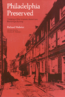

<body bgcolor="#FFFFFF" text="#000000" link="#0000FF" vlink="#CC0000" alink="#CC0000"><center><hr width="350" size="1" align="center" noshade>Over 300 years of history recorded by architecture<hr width="350" size="1" align="center" noshade><p><a href="https://cdcshoppingcart.uchicago.edu/Cart/ChicagoBook.aspx?ISBN=9780877220893&&PRESS=temple" target="_top">Buy this book!</a> | <a href="https://cdcshoppingcart.uchicago.edu/Cart/Cart.aspx?PRESS=temple" target="_top">View Cart</a> | <a href="https://cdcshoppingcart.uchicago.edu/Cart/Cart.aspx?PRESS=temple" target="_top">Check Out</a></p><p></p></center><!--none//--><h1>Philadelphia Preserved</h1>
<H2>Catalog of the Historic American Buildings Survey</H2>
<h3>Richard J. Webster, introduction by Charles E. Peterson</h3>
<P>cloth 0-87722-089-1 $29.95, Jun 75, <FONT COLOR=#990033>Out of Print</FONT>
<br>paper 0-87722-215-0 $41.95, Oct 81, <FONT COLOR=#990033>Available</FONT>
<br>Electronic Book 1-59213-177-8 $.00 <FONT COLOR=#990033>Out of Print</FONT>
<BR></P><h3 align="center"><P><font color="#996633">Association of American University Presses Book Jacket Award,
1977</font></P>
</H3>
<BLOCKQUOTE><I>"As a key to Philadelphia's historic environment, this will become a standard work."</I>
<br>&#151<b><I>Museum News</I></b><I></I></BLOCKQUOTE>
<p>Today, William Penn's town is the living history of 300 years of architecture told in outstanding examples of Colonial, Federal, Italianate, and other early styles, and in the twentieth-century innovations of LeCorbusier, Kahn, and Wright. This new paperback edition updates the Historic American Buildings Survey collection, with new information on buildings lost through fire or demolition, or altered to restore the original architecture.
<p>Organized by the traditional sections of the city, the entries include extensive physical descriptions of the structures, analyses of architecturally notable features, dates of construction, alteration, or demolition, and a new street index. The book contains more than 100 drawings, photos, and maps from the HABS collection.
<BR>&nbsp;<h2>Reviews</h2>
<p><I>"[F]rom Colonial, Federal and Italiante styles to the 20th-century innovation of LeCorbusier, Kahn, and Wright."</I>
<br>&#151<b><I>Philadelphia Inquirer</I></b>
<p><i>"A cause for celebration. The editor's introductions set each part of the city into understandable units. The book is a clearly told story of success and failure in historic preservation."</i>
<br>&#151<b>J.E. Mooney</b>, Director, Historical Society of Pennsylvania
<p><i>"A lovely portrait of Philadelphia's rich history of buildings."</i>
<br>&#151<b><i>The Pennsylvania Magazine of History and Biography</i></b>
<BR>&nbsp;<H2>About the Author(s)</H2>
<P><b>Richard J. Webster</b> is Professor of History and American Studies at West Chester State College, West Chester, Pennsylvania.</P>
<BR><H2>Subject Categories</H2>
<p><A HREF="/tempress/philly.html" TARGET="_top">Philadelphia Region</a>
</p>
<p align="center"><a href="https://cdcshoppingcart.uchicago.edu/Cart/ChicagoBook.aspx?ISBN=9780877220893&&PRESS=temple" target="_top">Buy this book!</a> | <a href="https://cdcshoppingcart.uchicago.edu/Cart/Cart.aspx?PRESS=temple" target="_top">View Cart</a> | <a href="https://cdcshoppingcart.uchicago.edu/Cart/Cart.aspx?PRESS=temple" target="_top">Check Out</a></p><p><font face="Arial" size="1"><a href="copyright.html" onMouseOver="window.status='Web Copyright Policy';return true;" onMouseOut="window.status=''" title="Web Copyright Policy">&copy;</a> 2015 <a href="http://www.temple.edu" target="new" onMouseOver="window.status='Link to Temple University home page';return true;" onMouseOut="window.status=''" title="Link to Temple University home page">Temple University</a>. All Rights Reserved. http://www.temple.edu/tempress/titles/112_reg.html</font></p>